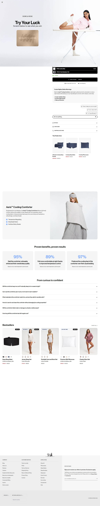
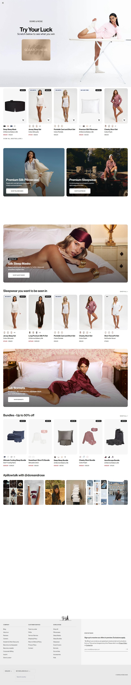

doreandrose.com · pijama, roupa de cama e acessórios de sono · EUR

Preço varia por tamanho: twin €114 · full/queen €124 · king €139. Material: 90% Nylon / 10% Spandex com infusão de íons de prata.
Mediana do catálogo inteiro (304 produtos, todas as categorias): €143
| Categoria do catálogo | Produtos |
|---|---|
| Pajamas | 96 |
| Eye masks | 55 |
| Ponytail holders | 26 |
| Pillowcases | 12 |
| Quilts, robes, lingerie | demais categorias, sem contagem individual detalhada |
Em resumo: mesmo com 96 pajamas no catálogo, o ângulo de calores da menopausa não aponta pra nenhum deles. A PDP capturada (print abaixo) é do Aeris™ Cooling Comforter, a página real de destino do anúncio.
Em resumo: de cada 100 anúncios que essa operação já rodou, só 4 ou 5 continuam ativos hoje. É o oposto do padrão "acerta de primeira e sustenta" das lojas pequenas do nicho (Lusomé tem 100% de sobrevivência) — aqui é volume industrial de teste, típico de operação com orçamento de marca grande, não sinal de oferta certeira.
| Formato | Vídeo (0m43s), não estático. |
| Texto completo | "Designed for women navigating hormonal changes... Aeris Cooling Collection... regulates temperature and provides instant cooling relief" (desenhado pra mulheres passando por mudanças hormonais... coleção Aeris Cooling... regula a temperatura e dá alívio imediato de resfriamento) |
| Headline |
|---|
| "Hot flashes ruining your sleep?" |

O que faz este anúncio vender, decodificado do criativo e da PDP. Vale como molde de copy pro ângulo cooling/menopausa, mesmo o produto real sendo roupa de cama e não pijama.
| Big idea / ângulo | Calores da menopausa (hot flashes) atrapalhando seu sono. |
| Mecanismo único | Linha Aeris™ Cooling: tecido com infusão de íons de prata (90% Nylon / 10% Spandex) que "regula a temperatura e dá alívio imediato de resfriamento". |
| Formato de hook | "Hot flashes ruining your sleep?" em vídeo de 43 segundos, endereçado direto à mulher em mudança hormonal. |
| Estrutura do presell | Anúncio leva direto pra PDP do comforter (edredom) com prova de painel embutida no criativo e desconto de 33% já aplicado. |
| Prova usada | Prova de painel própria: 95% relataram melhora percebida no sono, 89% melhor controle de temperatura, 97% prefeririam a coleção. Também usa "5.000+ Reviews" no criativo. |
O criativo usa "5.000+ Reviews", mas essa contagem é da marca inteira, não do Aeris™ Cooling Comforter especificamente.
aggregateRating no HTML da PDP do comforter). Tratar "5.000+ Reviews" como número de marca, não prova do produto isolado.Transparência sobre os limites desta ficha. Cada linha mostra o que faltou, por quê, e o que foi tentado.
| Dado | Motivo | Método tentado |
|---|---|---|
| Reviews específicos do Aeris™ Cooling Comforter | criativo só mostra número agregado da marca ("5.000+ Reviews") | Leitura da PDP capturada e do criativo vencedor; não foi possível isolar a contagem por produto. |
| Tráfego real (SimilarWeb) e faturamento estimado | fora do escopo desta ficha — loja é MARCA/fora de escopo, não candidata a MODELAR, então não recebeu triangulação de faturamento | Não coletado, por decisão de escopo (esforço reservado pras lojas qualificadas). |
| Tech stack e categorias completas do catálogo | catálogo de 304 produtos, só as 4 maiores categorias foram contadas individualmente | Leitura do catálogo público; quilts, robes e lingerie não tiveram contagem exata levantada. |
Sem scorecard de nível de execução: essa operação não é dropshipping replicável por um iniciante, então a régua de "nível" (que mede o quanto dá pra copiar com pouco investimento) não se aplica aqui.
Dore & Rose é grande demais e diversificada demais pra ser molde de operação (304 produtos, 15 mil anúncios, quase 5 anos de domínio). O achado que importa: o ângulo "Hot flashes ruining your sleep?" que aparentava ser sleepwear de menopausa na verdade vende roupa de cama (Aeris™ Cooling Comforter, €114 a €139). Serve só pra estudar o hook, o mecanismo (íons de prata, regulação de temperatura) e a prova de painel (95%/89%/97%), adaptando pra um produto vestível de verdade.